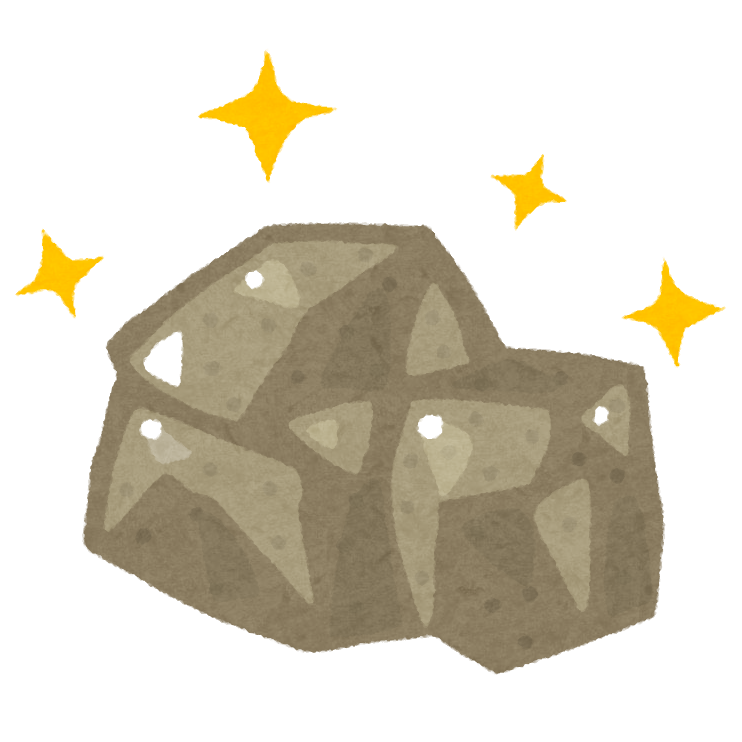
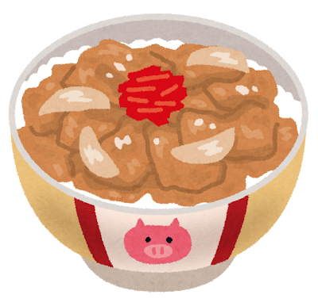
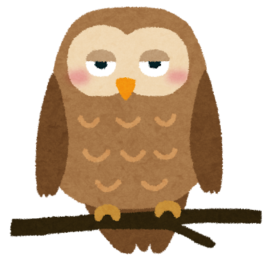
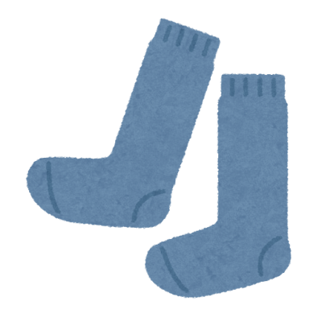
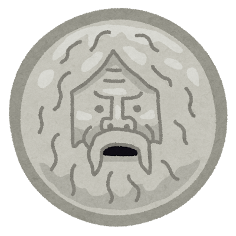
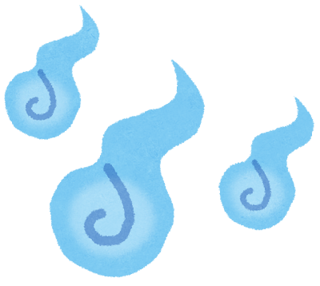
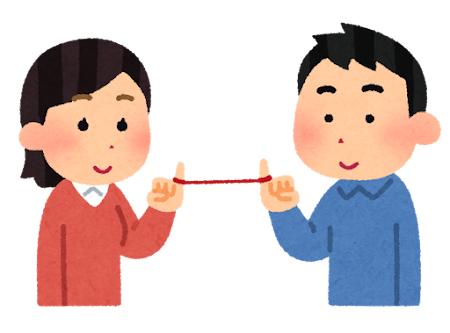
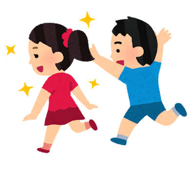

<!DOCTYPE html>
<html>
  <head>
<meta charset="UTF-8">
<title>音声収束に関する産出実験</title>

<script src="https://unpkg.com/jspsych@7.3.2"></script>

<script src="https://unpkg.com/@jspsych/plugin-html-keyboard-response@1.1.2"></script>
<script src="https://unpkg.com/@jspsych/plugin-html-button-response@1.1.2"></script>
<script src="https://unpkg.com/@jspsych/plugin-survey-text@1.1.2"></script>
<script src="https://unpkg.com/@jspsych/plugin-browser-check@1.0.0"></script>
<script src="https://unpkg.com/@jspsych/plugin-preload@1.1.2"></script>
<script src="https://unpkg.com/@jspsych/plugin-html-audio-response@1.0.3"></script>
<script src="https://unpkg.com/@jspsych/plugin-survey-likert@1.1.3"></script>
<script src="https://unpkg.com/@jspsych/plugin-initialize-microphone@1.0.3"></script>

<script src="https://unpkg.com/@jspsych/plugin-survey-multi-choice@1.1.2"></script>
<script src="https://unpkg.com/@jspsych/extension-pipe@0.2.0"></script>
<script src="https://unpkg.com/@jspsych/plugin-call-function@1.1.2"></script>

<link href="https://unpkg.com/jspsych@7.3.2/css/jspsych.css" rel="stylesheet"/>
</head>
  <body></body>
  <script>
const subject_id = Math.random().toString(36).substring(2, 12);
    
//initialize jsPsych
const jsPsych = initJsPsych({
   extensions: [
    {
      type: jsPsychExtensionPipe,
      params: {
        experiment_id: "iCEfEYJ2H4ol", // Change it to proper ID if necessary
        filename: () => `${subject_id}.csv`
      }
    }
  ],
  show_progress_bar: true,
  message_progress_bar: '実験終了まで',
  auto_update_progress_bar: true,
  on_finish: function() {
    window.location = "https://google.com"
  }
});

const images = ['image/bunshou.png', 'image/butaniku.png', 'image/hikouki.png', 'image/hukurou.png', 'image/kutusita.png',
  'image/rirekisho.png', 'image/saiban.png', 'image/sinjitu.png', 'image/sintai.png', 'image/tamasii.png', 'image/tatemono.png',
  'image/unmei.png', 'image/wakamono.png', 'image/yuiitu.png', 'image/yuurrei.png'
];

const preload = {
    type: jsPsychPreload,
    images: images,
    message: "ローディング中です。少々お待ちください。",
};

var browser_check = {
  type: jsPsychBrowserCheck,
  inclusion_function: (data) => {
    return data.mobile === false
  },
  exclusion_message: (data) => {
    if (data.mobile) {
      return '<p>この実験はパソコンでしか参加できません。</p>';
    } else if (data.browser !== 'chrome') {
      return '<p>この実験はGoogle Chromeからしか参加できません。</p>'
    }
  }
};

//
const welcome = {
  type: jsPsychHtmlButtonResponse,
  prompt: "実験に参加いただきありがとうございます。"+
    "この実験には研究課題の性質上生物学的に女性である人のみ参加できます。"+,
  choices: ["理解した。次へ"],
};

// Initializing global variable to store participant information
window.participant_info = {
  ID: subject_id
};

const background = {
  type: jsPsychSurveyText,
  questions: [{
    prompt: "<p> あなたの年齢をお答えください。</p>",
    required: true,
    name: 'Age',
  },
  ],
  button_label: "次へ",
  on_finish: function(data) {
    window.participant_info.ID = subject_id;
  window.participant_info.Age = data.response.Age;

  var curr_progress_bar_value = jsPsych.getProgressBarCompleted();
  jsPsych.setProgressBar(curr_progress_bar_value + (1/70));
  }
};

const gender = {
  type: jsPsychHtmlButtonResponse,
  stimulus: '<p>あなたのジェンダー（社会的な性）をお答えください。</p>',
  choices: ['女性',
    '男性',
    'それ以外'],
  response_ends_trial: true,
  on_finish: function(data) {
    // 修正: data.responseは選択したボタンのインデックス(0, 1, 2)なので、テキストに変換
    const genderChoices = ['女性',
      '男性',
      'それ以外'];
    window.participant_info.Gender = genderChoices[data.response];

    jsPsych.data.addProperties({
      ID: window.participant_info.ID,
      Age: window.participant_info.Age,
      Gender: window.participant_info.Gender
    });

    var curr_progress_bar_value = jsPsych.getProgressBarCompleted();
    jsPsych.setProgressBar(curr_progress_bar_value + (1/70));
  }
};

const birthplace = {
  type: jsPsychSurveyText,
  questions: [{
    prompt: "これまでに住んできた場所をお答えください。<br>\
    例: 0-5歳 兵庫県神戸市、5-18歳 兵庫県西宮市、18-42歳 大阪府大阪市",
    required: true,
    horizontal: true,
    name: 'birthplace'
  }],
  button_label: '次へ',
};

var end_info = {
  type: jsPsychHtmlKeyboardResponse,
  stimulus: '<p>参加者情報の入力が完了しました。</p><p>これから実験の練習を開始します。何かキーを押して続行してください。</p>',
};

var instruction = {
  type: jsPsychHtmlKeyboardResponse,
  stimulus: "<p>あなたが本実験で行う作業は\
  <strong>画面に表示されたことばを<font color="red">３回</font>発音する</strong>ことです。</p>"+
  "<p>同じ単語の録音が３回ずつ続くので１回の録音ごとに１回発音したら次に進んでください。</p>"+
  "<p>発音する際にはあなたの方言・ことばでお話しください。<strong>ふだん仲の良い地元の友達に話すように発音しましょう。</p>"+
  "<p>また、音声を録音するため、この作業は<strong>他の人やテレビの音のない静かな部屋</strong>\で行ってください。</p>"+
  "<p>またあなたのコンピューターのマイクで録音します。<strong>次の画面でマイクの許可を求めますので必ずマイクを許可してください。</strong></p>"+
  "<p>理解したらどれかのキーを押して続行してください。</p>",
};

var initialize_mic = {
  type: jsPsychInitializeMicrophone,
  device_select_message: 'これは被験者にマイクを許可してもらうための試行です。<br>\
「マイクを許可してください」というメッセージが表示された場合は許可してください。',
  button_label: 'マイクを許可した: 次へ進む'
};

// Record the microphone / recording environment after permission is granted
const mic_info = {
  type: jsPsychCallFunction,
  func: function() {
    const info = {};
    try {
      const recorder = jsPsych.pluginAPI.getMicrophoneRecorder();
      const track = recorder.stream.getAudioTracks()[0];
      const s = track.getSettings();
      info.mic_label = track.label;
      info.mic_sampleRate = s.sampleRate;
      info.mic_sampleSize = s.sampleSize;
      info.mic_channelCount = s.channelCount;
      info.mic_echoCancellation = s.echoCancellation;
      info.mic_noiseSuppression = s.noiseSuppression;
      info.mic_autoGainControl = s.autoGainControl;
      info.mic_latency = s.latency;
      info.rec_mimeType = recorder.mimeType;
      info.rec_audioBitsPerSecond = recorder.audioBitsPerSecond;
      const ctx = new (window.AudioContext || window.webkitAudioContext)();
      info.context_sampleRate = ctx.sampleRate;
      ctx.close();
      info.browser_ua = navigator.userAgent;
    } catch (e) {
      info.mic_error = String(e);
    }
    console.log(info);
    jsPsych.data.addProperties(info); // added to every later row of the CSV
    return info;
  }
};

//Testing understandings of instructions

let testAccuracy = 0;

const test = {
  type: jsPsychSurveyMultiChoice,
  preamble: "<p>実験の手順について確認します。先ほど見たあなたがこの作業で行う内容に関する問題です。</p>",
  questions: [{
    prompt: "この実験で行う内容について正しいものを選んでください。",
    options: ["画面に提示された単語を録音１回につき３回繰り返して発音する。",
      "同じ単語の録音は３回ずつされるので録音１回につき１度だけ発音する。"],
    required: true,
    name: "audio_understand",
  },
    {
      prompt: "あなたが実験を行う環境として適切なものを選んでください。",
      options: ["耳で聴いて分かるような大きさの工事現場の騒音が聞こえる部屋。",
        "家族やテレビの音が一切聞こえない静かな部屋でコンピュータのマイクを許可する。",
        "静かな部屋だがコンピュータの設定でマイクをオフにしている。"],
      required: true,
      name: "task_understand",
    },

    {
      prompt: "ことばを読む時はどのように発音しますか？適切なものを選んでください。",
      options: ["仲のいい地元の友達と話す時のように話す。",
        "テレビのアナウンサーが話す時のように丁寧に話す。",
        "職場の上司や学校の先生に話しかける時のように話す。"],
      required: true,
      name: "nonce_understand",
    }],

  button_label: "回答を完了する。",
  on_finish: function(data) {

    testAccuracy = 0;

    testAccuracy += Number(data.response["audio_understand"] === "同じ単語の録音は３回ずつされるので録音１回につき１度だけ発音する。");
    testAccuracy += Number(data.response["task_understand"] === "家族やテレビの音が一切聞こえない静かな部屋でコンピュータのマイクを許可する。");
    testAccuracy += Number(data.response["nonce_understand"] === "仲のいい地元の友達と話す時のように話す。");

    testAccuracy = testAccuracy / 3;
  },
};


// If the response is not correct, the instruction is shown one more time.

const notifyagain = {
  type: jsPsychHtmlButtonResponse,
  stimulus: "あなたの回答には実験の手順に関して誤りがありました。"+
  "もう一度手順を読んで確認してください。<br>",
  choices: ["もう一度確認する。"],
};
const notifytlOneMore = {
  timeline: [notifyagain],
  conditional_function: function() {
    return testAccuracy !== 1
  }
};

// If the response is correct, I appreciate a participant to understand my intension properly. After confirmation,\
//The timeline goes to experiment section.

const Correct = {
  type: jsPsychHtmlButtonResponse,
  stimulus: "あなたの回答は全問正解でした！" +
  "実験の手順に関して正しく理解してくださりありがとうございます。 <br>" +
  "それではこれから実験の練習課題を行います。<br>",
  choices: ["次へ"],
};

const notifyCorrect = {
  timeline: [Correct],
  conditional_function: function() {
    return testAccuracy === 1
  }
}

// Run conditionnally instruction and test section
const inst_test = {
  timeline: [instruction,
    test,
    notifytlOneMore,
    notifyCorrect],
  loop_function: function() {
    return testAccuracy !== 1;
  }
};

//practice task
var practice= {
  type: jsPsychHtmlAudioResponse,
  prompt: "<p>単語を１回発音したらボタンを押してください。録音はすでに始まっています。</p>",
  stimulus: "</img><p style=\"font-size:36px;\">「特別」</p>",
  recording_duration: 20000,
  allow_playback: true,
  show_done_button: true,
  done_button_label: '録音が完了しました。',
  accept_button_label: '完成しました。次へ',
  record_again_button_label: 'もういちど録音する。'
};

//Liaison

const liaison = {
  type: jsPsychHtmlButtonResponse,
  stimulus: "<p>これから本実験に移ります。</p>"+
    "<p>練習と同じように出てきた単語を読み上げて次へ進んでください</p>"+
    "<p>16個の単語をそれぞれ3回発音するので合計48回の録音があります。</p>",
  choices: ["本実験へ進む"],
};


//Main task
//Target words
var item_list = [{
  data: {
    "type": "osaka",
    "target_filler": "target",
    "no": "01",
    "item_kana": "ぶんしょう",
    "item": "文章",
    "item_ro": "bunshou",
    "output": "ぶんしょう",
    "julius": "ぶんしょー",
    "HLLL": "yes",
    "fst_mora_v": "u"
  },
  "stimulus": "</img><p style=\"font-size:36px;\">「ぶんしょう」</p>"
},

  {
  data: {
    "type": "osaka",
    "target_filler": "target",
    "no": "02",
    "item_kana": "ぶたにく",
    "item": "豚肉",
    "item_ro": "butaniku",
    "output": "ぶたにく",
    "julius": "ぶたにく",
    "HLLL": "no",
    "fst_mora_v": "u",
  },
  "stimulus": "</img><p style=\"font-size:36px;\">「豚肉」</p>"
},

  {
  data: {
    "type": "osaka",
    "target_filler": "filler",
    "no": "03",
    "item_kana": "ひこうき",
    "item": "飛行機",
    "item_ro": "hikouki",
    "output": "ひこうき",
    "julius": "ひこーき",
    "HLLL": "no",
    "fst_mora_v": "i",
  },
  "stimulus": "</img><p style=\"font-size:36px;\">「飛行機」</p>"
},

{
  data: {
    "type": "osaka",
    "target_filler": "target",
    "no": "04",
    "item_kana": "ふくろう",
    "item": "ふくろう",
    "item_ro": "fukurou",
    "output": "ふくろう",
    "julius": "ふくろー",
    "HLLL": "no",
    "fst_mora_v": "u"
  },
  "stimulus": "</img><p style=\"font-size:36px;\">「ふくろう」</p>"
},

{
  data: {
    "type": "osaka",
    "target_filler": "target",
    "no": "05",
    "item_kana": "くつした",
    "item": "靴下",
    "item_ro": "kutsushita",
    "output": "くつした",
    "julius": "くつした",
    "HLLL": "no",
    "fst_mora_v": "u"
  },
  "stimulus": "</img><p style=\"font-size:36px;\">「靴下」</p>"
},

{
  data: {
    "type": "osaka",
    "target_filler": "filler",
    "no": "06",
    "item_kana": "りれきしょ",
    "item": "履歴書",
    "item_ro": "rirekisho",
    "output": "りれきしょ",
    "julius": "りれきしょ",
    "HLLL": "no",
    "fst_mora_v": "i",
  },
  "stimulus": "</img><p style=\"font-size:36px;\">「履歴書」</p>"
},

//Filler items
{
  data: {
    "type": "osaka",
    "target_filler": "target",
    "no": "07",
    "item_kana": "さいばん",
    "item": "裁判",
    "item_ro": "saiban",
    "output": "さいばん",
    "julius": "さいばん",
    "HLLL": "yes", 
    "fst_mora_v": "a",
  },
  "stimulus": "</img><p style=\"font-size:36px;\">「裁判」</p>"
},

{
  data: {
    "type": "osaka",
    "target_filler": "target",
    "no": "08",
    "item_kana": "しんじつ",
    "item": "真実",
    "item_ro": "shinjitsu",
    "output": "しんじつ",
    "julius": "しんじつ",
    "HLLL": "yes",
    "fst_mora_v": "i",
  },
  "stimulus": "</img><p style=\"font-size:36px;\">「真実」</p>"
},

{
  data: {
    "type": "osaka",
    "target_filler": "target",
    "no": "09",
    "item_kana": "しんたい",
    "item": "身体",
    "item_ro": "shintai",
    "output": "しんたい",
    "julius": "しんたい",
    "HLLL": "yes", 
    "fst_mora_v": "i", 
  },
  "stimulus": "</img><p style=\"font-size:36px;\">「身体」</p>"
},

{
  data: {
    "type": "osaka",
    "target_filler": "target",
    "no": "10",
    "item_kana": "たましい",
    "item": "魂",
    "item_ro": "tamashii",
    "output": "たましい",
    "julius": "たましー",
    "HLLL": "yes", 
    "fst_mora_v": "a", 
  },
  "stimulus": "</img><p style=\"font-size:36px;\">「魂」</p>"
},

{
  data: {
    "type": "osaka",
    "target_filler": "filler",
    "no": "11",
    "item_kana": "たてもの",
    "item": "建物",
    "item_ro": "tatemono",
    "output": "たてもの",
    "julius": "たてもの",
    "HLLL": "no",
    "fst_mora_v": "a",
  },
  "stimulus": "</img><p style=\"font-size:36px;\">「建物」</p>"
},

{
  data: {
    "type": "osaka",
    "target_filler": "target",
    "no": "12",
    "item_kana": "うんめい",
    "item": "運命",
    "item_ro": "unmei",
    "output": "うんめい",
    "julius": "うんめー",
    "HLLL": "yes",
    "fst_mora_v": "u",
  },
  "stimulus": "</img><p style=\"font-size:36px;\">「運命」</p>"
},

{
  data: {
    "type": "osaka",
    "target_filler": "filler",
    "no": "13",
    "item_kana": "わかもの",
    "item": "若者",
    "item_ro": "wakamono",
    "output": "わかもの",
    "julius": "わかもの",
    "HLLL": "no",
    "fst_mora_v": "a",
  },
  "stimulus": "</img><p style=\"font-size:36px;\">「若者」</p>"
},

{
  data: {
    "type": "osaka",
    "target_filler": "target",
    "no": "14",
    "item_kana": "ゆいいつ",
    "item": "唯一",
    "item_ro": "yuiitsu",
    "output": "ゆいいつ",
    "julius": "ゆいーつ",
    "HLLL": "yes",
    "fst_mora_v": "u",
  },
  "stimulus": "</img><p style=\"font-size:36px;\">「唯一」</p>"
},

{
  data: {
    "type": "osaka",
    "target_filler": "target",
    "no": "15",
    "item_kana": "ゆうれい",
    "item": "幽霊",
    "item_ro": "yuurei",
    "output": "ゆうれい",
    "julius": "ゆーれー",
    "HLLL": "yes",
    "fst_mora_v": "u",
  },
  "stimulus": "</img><p style=\"font-size:36px;\">「幽霊」</p>"
},

{
  data: {
    "type": "osaka",
    "target_filler": "target",
    "no": "16",
    "item_kana": "むらさき",
    "item": "紫",
    "item_ro": "murasaki",
    "output": "むらさき",
    "julius": "むらさき",
    "HLLL": "no",
    "fst_mora_v": "u",
  },
  "stimulus": "</img><p style=\"font-size:36px;\">「むらさき」</p>"
},
];

// ランダマイズ
var shuffledArray = jsPsych.randomization.shuffle(item_list);

var record = {
  type: jsPsychHtmlAudioResponse,
  prompt: "<p>単語を１回発音したらボタンを押してください。録音はすでに始まっています。</p>",
  stimulus: jsPsych.timelineVariable("stimulus"),
  data: jsPsych.timelineVariable('data'),
  recording_duration: 20000,
  allow_playback: true,
  done_button_label: '録音が完了しました。',
  accept_button_label: '完成しました。次へ',
  record_again_button_label: 'もういちど録音する。'

};

// シャッフルされたリストを読み込ませる
var record_timeline = {
  timeline: [{
    timeline: [record],
    repetitions: 3
  }],
  timeline_variables: shuffledArray,
};


//debriefing session
const end_task = {
  type: jsPsychHtmlKeyboardResponse,
  stimulus: "<p>本実験の作業は終了です。最後にこの実験に参加してみての\
  あなたの意見について尋ねます。<br>頂いたご意見は今後実施する本実験に生かしますので<strong>遠慮のない率直な意見</strong>\
  を頂けますと幸いです。<br>5段階の後の記述回答は任意ですがぜひ書いてくださると参考になります。</p>"
};

var likert_evaluate = [
  "全くそう思わない", 
  "どちらかといえばそう思わない", 
  "どちらとも言えない", 
  "少しそう思う", 
  "とてもそう思う"
];

var likert_length = [
  "非常に短かった",
  "少し短かった",
  "ちょうどいい長さだった",
  "少し長かった",
  "非常に長かった"];

var debrief_likert = {
  type: jsPsychSurveyLikert,
  questions: [
    {prompt: "作業に関する指示はわかりやすく、スムーズに参加できた。", name: 'clarity_inst', labels: likert_evaluate},
    {prompt: "録音は問題なく簡単に行うことができた。", name: 'easy_record', labels: likert_evaluate},
    {prompt: "作業にかかる長さはいかがでしたか？", name: 'length', labels: likert_length},
  ],
  randomize_question_order: false
};

const debrief_type = {
  type: jsPsychSurveyText,
  questions: [
    {prompt: "「作業に関する指示はわかりやすく、スムーズに参加できた。」\
    についてあなたがそう思った理由をお聞かせください。"},
    {prompt: "「録音は問題なく簡単に行うことができた。」\
    についてあなたがそう思った理由をお聞かせください。"},
    {prompt: "「作業にかかる長さはいかがでしたか？」\
    についてあなたがそう思った理由をお聞かせください。"},
    {prompt: "その他あなたが思ったことがありましたらぜひお聞かせください。"},
    ],
    randomize_question_order: false,
    required: false,
};

var goodbye = {
  type: jsPsychHtmlButtonResponse,
  stimulus: '<p>ご回答ありがとうございました。</p>',
  choices: ['実験を終了する。'],
  response_ends_trial: true,
};

// Generate participant ID before initializing jsPsych
//const subject_id = jsPsych.randomization.randomID(10);


//Timeline
const Timeline = [
  preload,
  browser_check,
  welcome,
  background,
  gender,
  birthplace,
  end_info,
  instruction,
  inst_test,
  initialize_mic,
  mic_info,
  { timeline: [practice], repetitions: 3 },
  liaison,
  record_timeline,
  end_task,
  debrief_likert,
  debrief_type,
  goodbye,
];

//Run the experiment
jsPsych.run(Timeline)
  </script>
</html>
